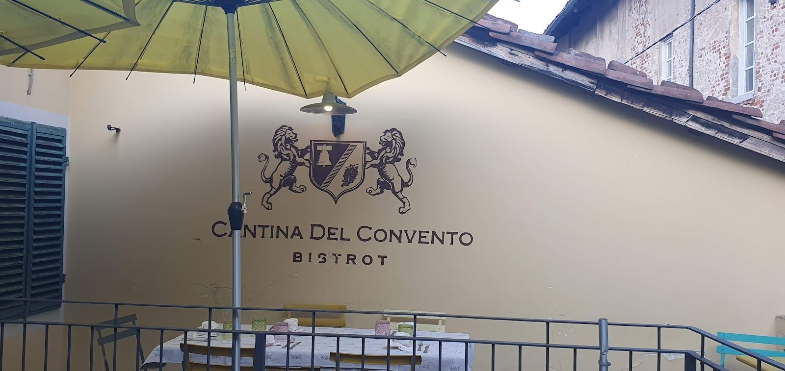
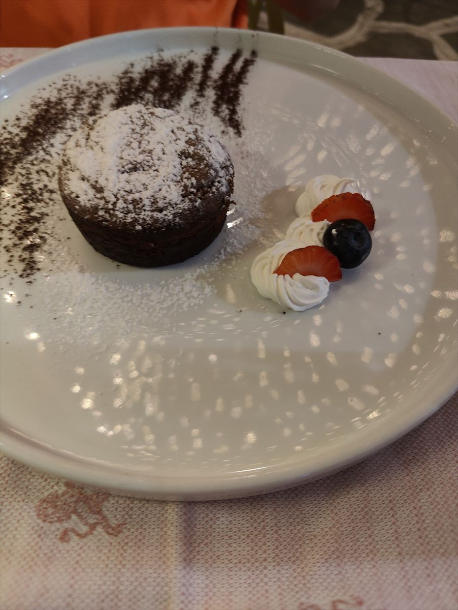
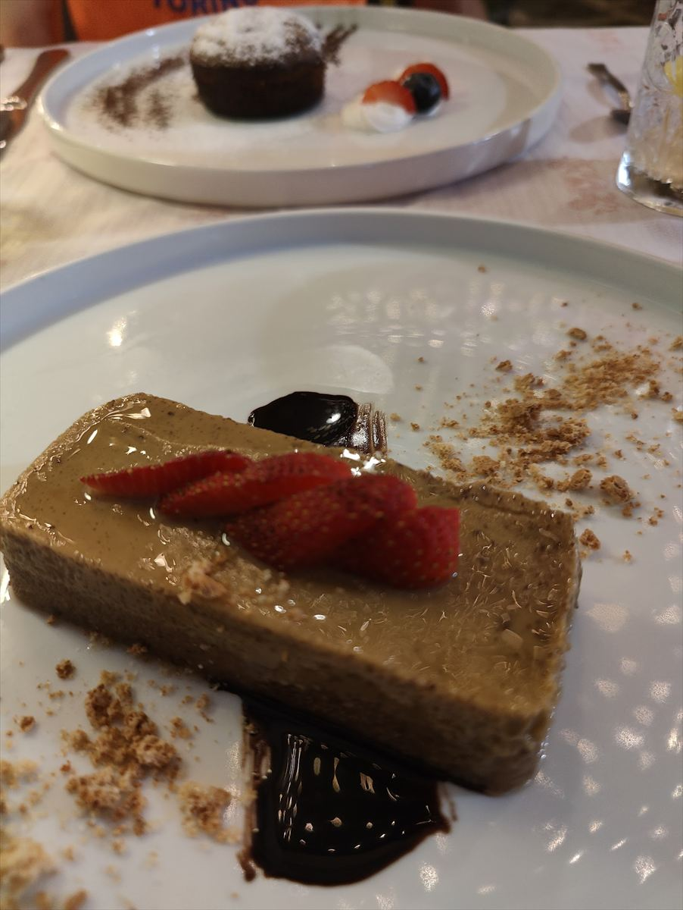
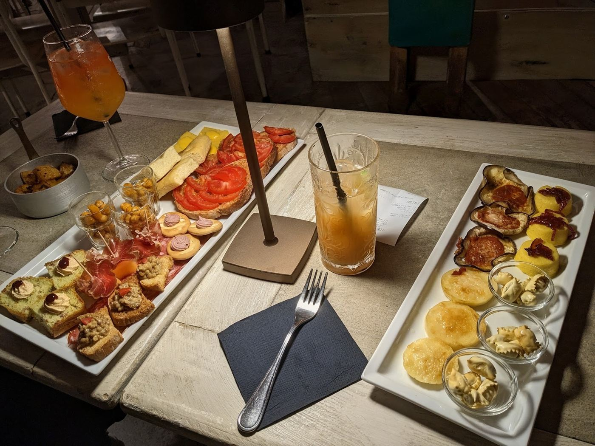
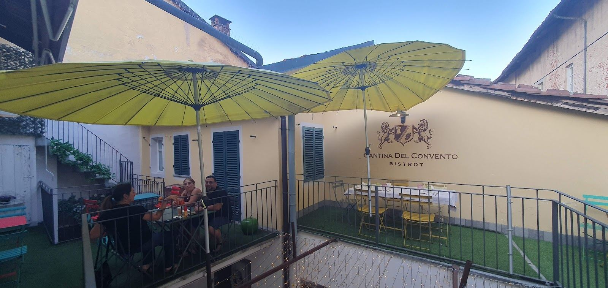
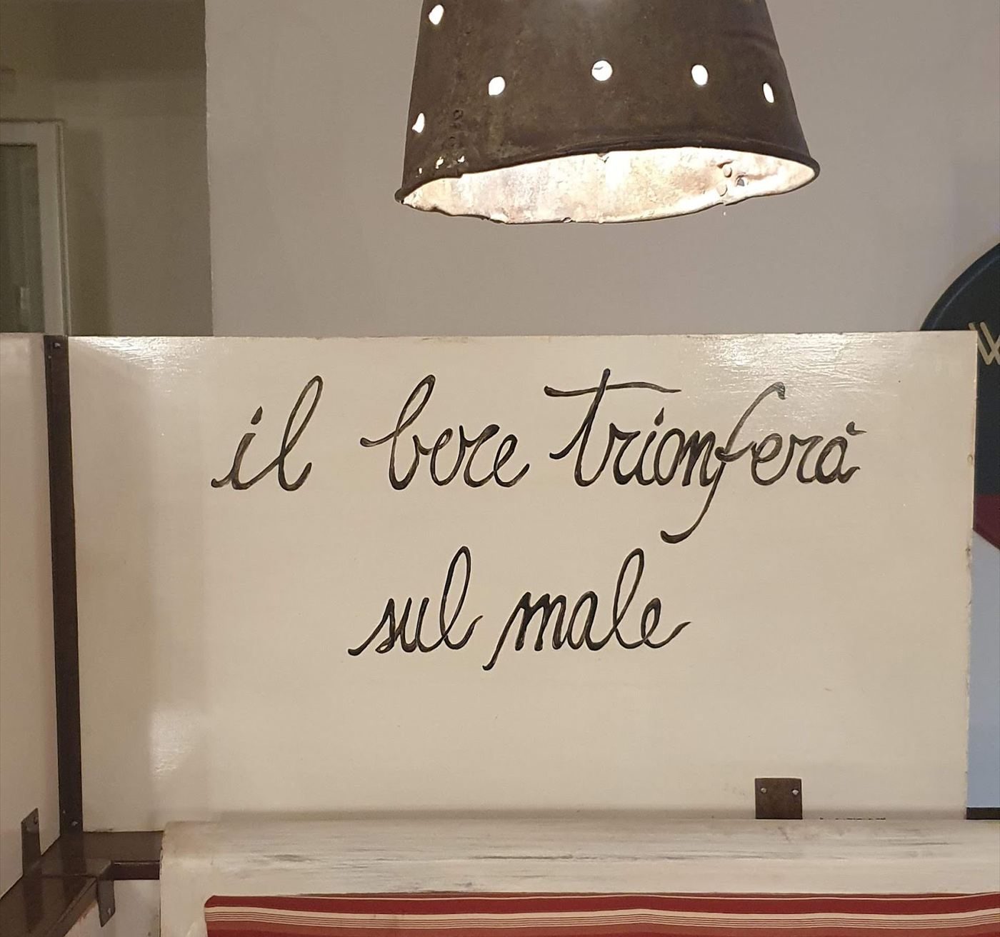
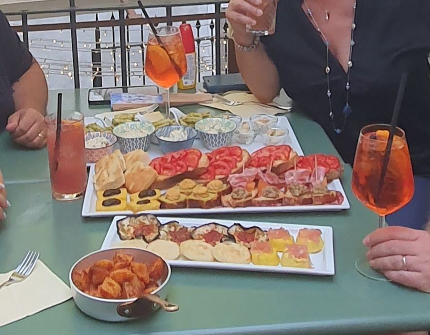

Cantina del ConventoQuel che passa il convento, stasera.
Si entra dal portone e si arriva nella corte. Cucina informale e di stagione, menù completi oppure un tagliere, una focaccia, un burger di Fassona e un buon bicchiere, dall'aperitivo fino a tarda sera.
il bere trionferà sul male
scritto a mano sul muro della nostra salaConfessa il tuo peccato.
Qui non si giudica nessuno. Scegli la tua debolezza di stasera: la penitenza la decide la cucina.
Il libro delle ore golose.
La cucina segue la stagione: questi sono alcuni dei piatti passati dal convento.
Il menù cambia spesso: chiedi in sala quel che passa il convento oggi. Opzioni vegetariane, vegane e senza glutine su richiesta.






Una corte nascosta in centro.
Dietro il portone di Via Broglia si apre una corte interna: ombrelloni, lucine, piante e una cascata in acciaio corten. Con la bella stagione si cena qui, d'inverno in sala.
- Tavoli all'aperto nella corte
- Serate con musica dal vivo
- Vini e birre artigianali
- Seggioloni per i più piccoli
Vieni a trovarci.
Via Broglia, 13 · 10023 Chieri (TO)
Indicazioni · Instagram · Facebook